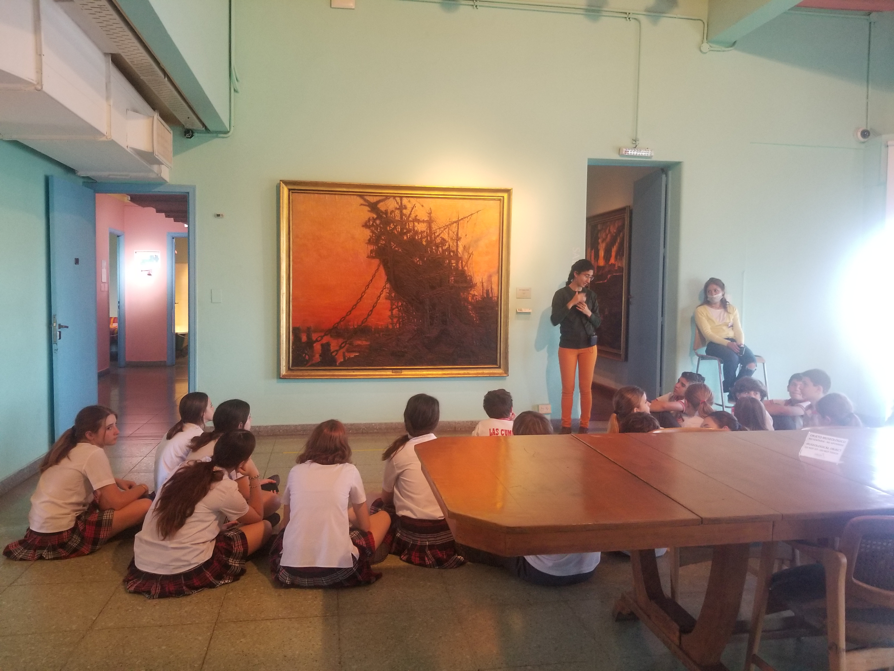
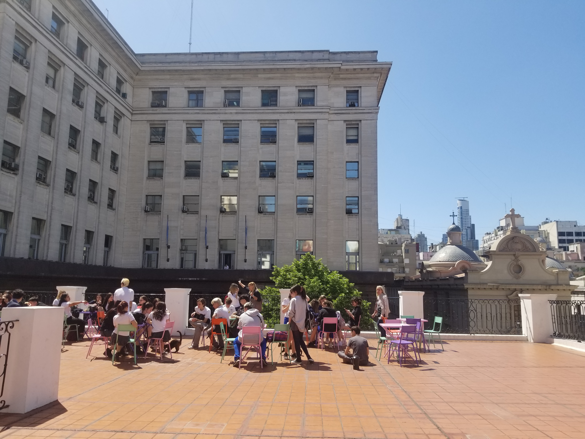
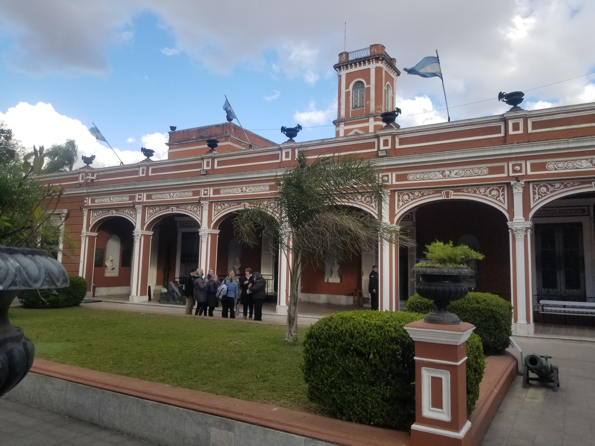
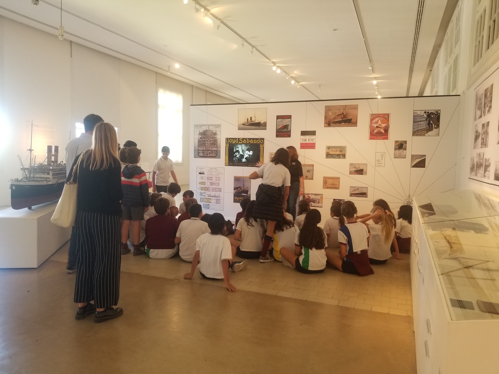

Imagen de
Circuitos históricos
- Historia de la Ciudad
- Visitamos Plaza de Mayo y sus alrededores. Ingresamos a edificios emblemáticos y descubrimos curiosidades sobre nuestra ciudad.
- Parque Lezama y Museo Histórico
- Un paseo lleno de historia en nuestro primer parque público y sus alrededores. Visita guiada al Museo Histórico Nacional.
- Circuito Invasiones Inglesas
- Caminamos por las calles que fueron testigos de los hechos de 1806 a 1807. Visita al convento de Santo Domingo.
- Circuito Belgraniano
- Un recorrido por las calles del casco histórico donde conoceremos mejor al creador de nuestra bandera nacional.
- Circuito Sanmartiniano
- Vamos tras las huellas de San Martín. Recorrido con 3 paradas: Plaza San Martín, Catedral Metropolitana de Buenos Aires y el Instituto Sanmartiniano.
- Circuito Inmigrantes
- Recordamos las inmigraciones del siglo XIX y principios del siglo XX. Este recorrido
posee 3 opciones:
- La Boca y Hotel de Inmigrantes
- San Telmo y Museo Quinquela Martin
- San Telmo, Parque Lezama y La Boca
- Circuito "La Belle Époque"
- Viajamos a este período de nuestra historia recorriendo distintos lugares que marcaron
esta época. Este recorrido posee tres opciones:
- Costanera Sur, Plaza San Martín y visita al Palacio Paz
- Parque 3 de Febrero y visita guiada en el Museo de Arte Decorativo, Palacio Errazuriz
- Parque 3 de Febrero e Hipódromo de Palermo
Circuitos Verdes
- Reserva Ecológica Costanera Sur
- Un paseo distinto dentro de la reserva donde aprenderemos sobre la importancia de los humedales y la preservación de este tipo de espacios en la ciudad y en el mundo.
- Ecoparque (ex Zoológico)
- Paseamos por el ex zoológico de Buenos Aires para hablar sobre la educación ambiental, el cuidado de la fauna y para asombrarnos por los edificios históricos que se esconden en el parque.
Circuitos
por la ciudad
- Circuito esculturas - Barrio Recoleta
- Descubriremos las esculturas del barrio de Recoleta que suelen pasar desapercibidas en la vida cotidiana. Vista al Museo Nacional de Bellas Artes.
- Primer y último barrio
- Descubriremos dos barrios muy cercanos uno del otro que, sin embargo, son muy distintos entre sí: Montserrat y Puerto Madero.
- Tres Plazas, Tres Historias
- Recorrido por tres plazas de CABA. Conoceremos sus historias, monumentos y alrededores. Plaza de los dos Congresos, Plaza Lavalle y Plaza Torcuato de Alvear (Recoleta).
- Puerto Madero y Fragata Sarmiento
- Recorremos el barrio más nuevo de nuestra ciudad y finalizamos con una visita a nuestro primer buque escuela.